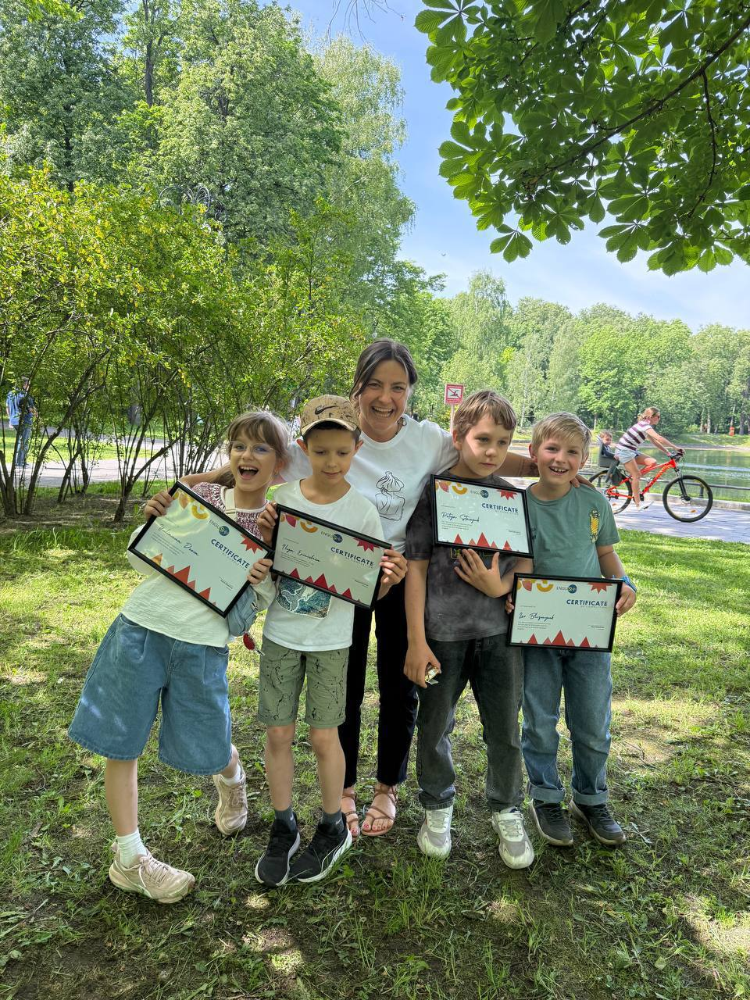
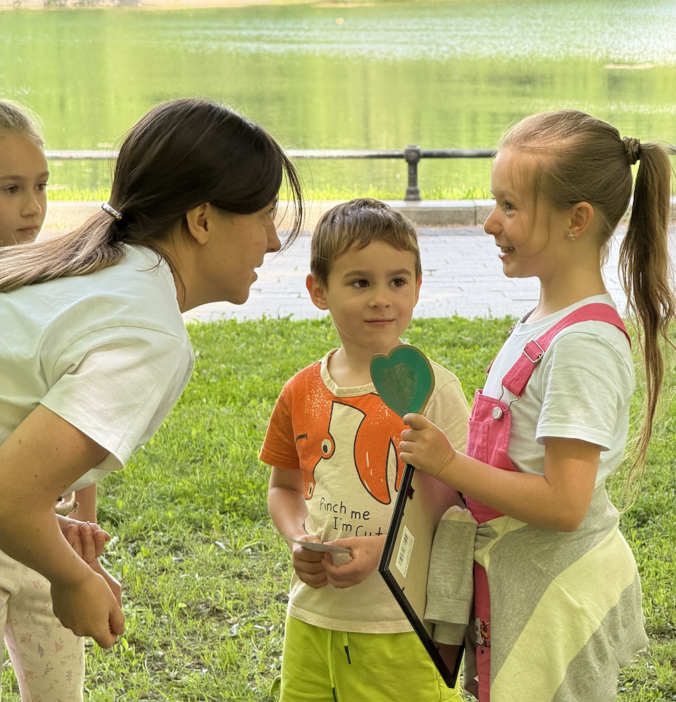
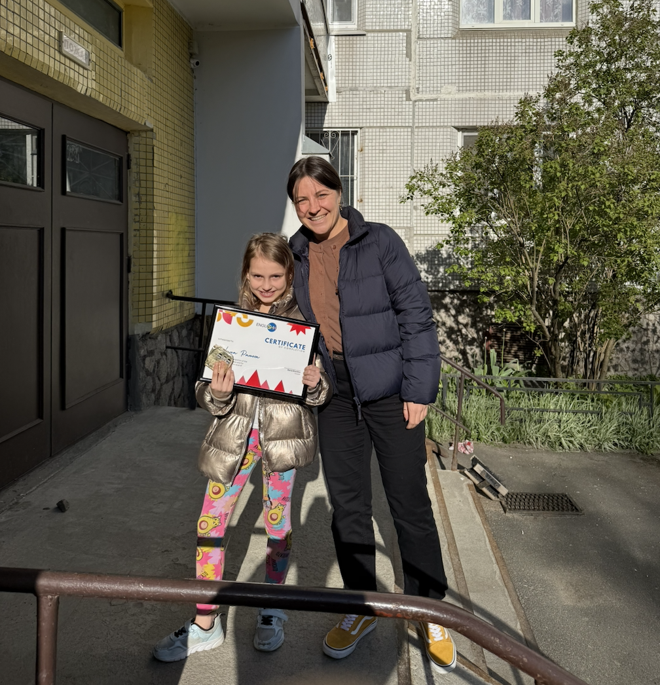
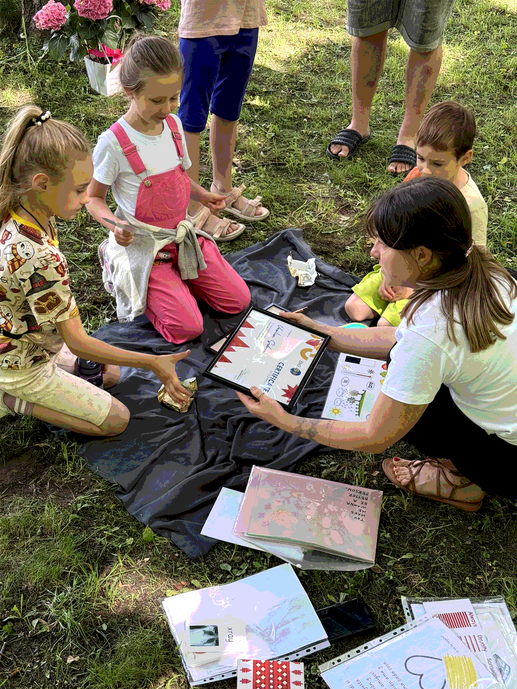

На наших занятиях любовь к языку становится частью более широкого интереса к знаниям, культуре и окружающему миру.
2–4 ученика в мини‑группе, дети 5–14 лет

Пошаговый процесс обучения гарантирует увлекательные уроки и заметный прогресс.
Вы оставляете заявку здесь или пишете/звоните мне. Я расспрашиваю о ребёнке и отвечаю на ваши вопросы.
Бесплатная встреча с ребёнком на 25–30 минут. Смотрю на уровень, темперамент и интересы, чтобы подобрать подходящую группу.
Подбираю двух‑трёх детей, совпадающих по возрасту, уровню и характеру, а также удобный график занятий.
Уроки проходят в Zoom. После каждого занятия отправляю запись и домашнее задание; раз в месяц — отчёт о прогрессе.
Меня зовут Даша. Мне 31 год, и уже более 11 лет я преподаю английский детям. За эти годы я работала в частных школах Москвы, на онлайн‑платформах, проводила индивидуальные и групповые занятия для дошкольников и подростков. Главное, что я поняла: дети редко влюбляются в английский язык сам по себе, зато могут часами обсуждать капибар, Kepler‑438b, майя, Roblox, лего или вулканы. Когда уроки строятся вокруг их интересов, язык перестаёт быть целью и становится инструментом, помогающим узнавать новое.
Я создаю каждый урок под конкретную группу и убираю всё лишнее. Любовь к языку, привычка учиться и уверенность в своих знаниях формируются постепенно; каждый новый шаг опирается на уже приобретённый опыт и интерес ребёнка. В маленькой группе преподаватель успевает услышать каждого, а дети учатся воспринимать речь на разный манер и акцент, общаться с реальными личностями, а не только с учителем.



Я убираю всё лишнее и подбираю идеи под интересы детей. Каждый урок создаётся для конкретной мини‑группы.
Любовь к языку, привычка учиться и уверенность формируются постепенно; каждый шаг опирается на опыт ребёнка.
Дети слышат живую речь сверстников и получают достаточно внимания от преподавателя.
Учитываем уровень, возраст и темперамент каждого ребёнка, помогая раскрыть его сильные стороны.
Выберите подходящий формат в зависимости от возраста и целей вашего ребёнка.
Комплексная программа обучения английскому языку для школьников на весь учебный год.
1500 ₽ / занятие
Научимся читать ещё до того, как английский начнётся в школе.
1500 ₽ / занятие
Отличный способ подтянуть английский и добавить мотивацию за счёт нескучного формата занятий.
1500 ₽ / занятие
Летние занятия на всевозможные темы.
1500 ₽ / занятие
Короткие фрагменты демонстрируют, как проходят уроки и чем мы занимаемся.
Мы собрали ответы на самые популярные вопросы от родителей.
Я работаю с детьми от 5 до 14 лет. Группы формируются так, чтобы в них были ребята близкого возраста и уровня знаний.
Все уроки проходят в мини‑группах по 2–4 человека. Такой формат даёт детям время на общение и вопросы, а также возможность слышать живую речь сверстников.
Все уроки проходят онлайн в Zoom. Мы используем интерактивную доску, упражнения, игры и совместные проекты, чтобы уроки были интересными и насыщенными.
Моя цель — живой английский, поэтому мы не готовимся к экзаменам Cambridge или IELTS. Вместо этого мы учим детей свободно говорить и читать, расширяем их кругозор и уверенность в языке.
Группы собираются по возрасту, уровню знания языка и темпераменту детей. Также мы учитываем интересы ребят, чтобы подобрать темы уроков.
Если ребёнок пропустил урок, я отправлю материалы и запись занятия, чтобы он мог посмотреть в удобное время и не отставать от группы.
«Сдали экзамен в школу и даже попали в лингвистический класс! Дочка стала уверенно говорить, ошибки почти исчезли.»
«Теперь про прогресс! У сына заметно расширился кругозор: он обсуждает факты, задаёт вопросы и свободно говорит на уроках.»
«Присоединяюсь к отзывам! Огромное спасибо за ваш труд. Дети ждут занятий и радуют нас результатами.»
Я буду рада ответить на ваши вопросы, помочь выбрать подходящую программу и подобрать удобное время для пробного занятия.
Москва, ул. Фонвизина 18 (онлайн‑формат)